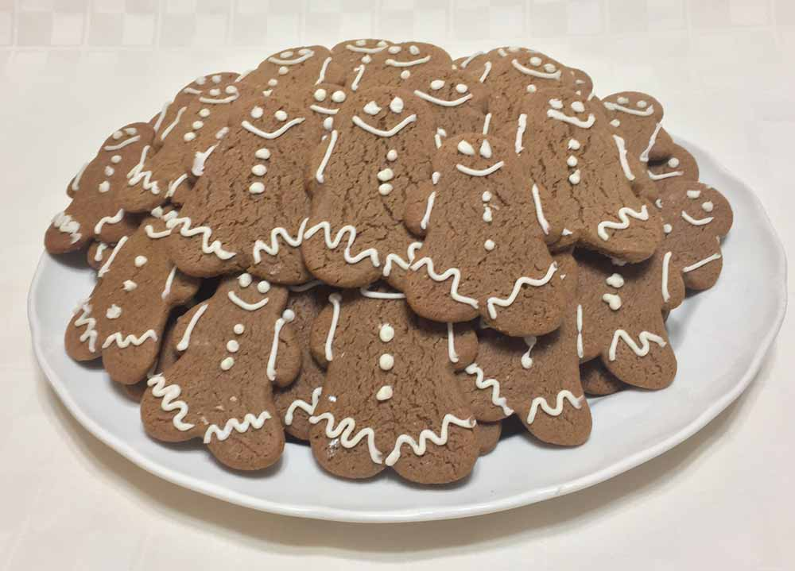
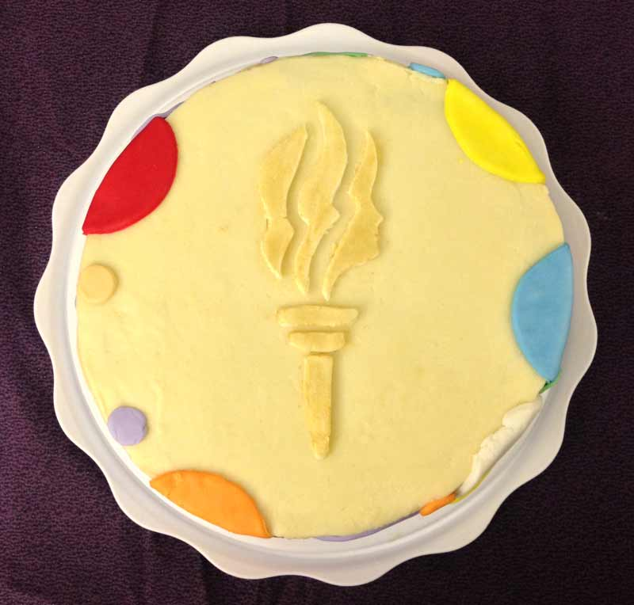
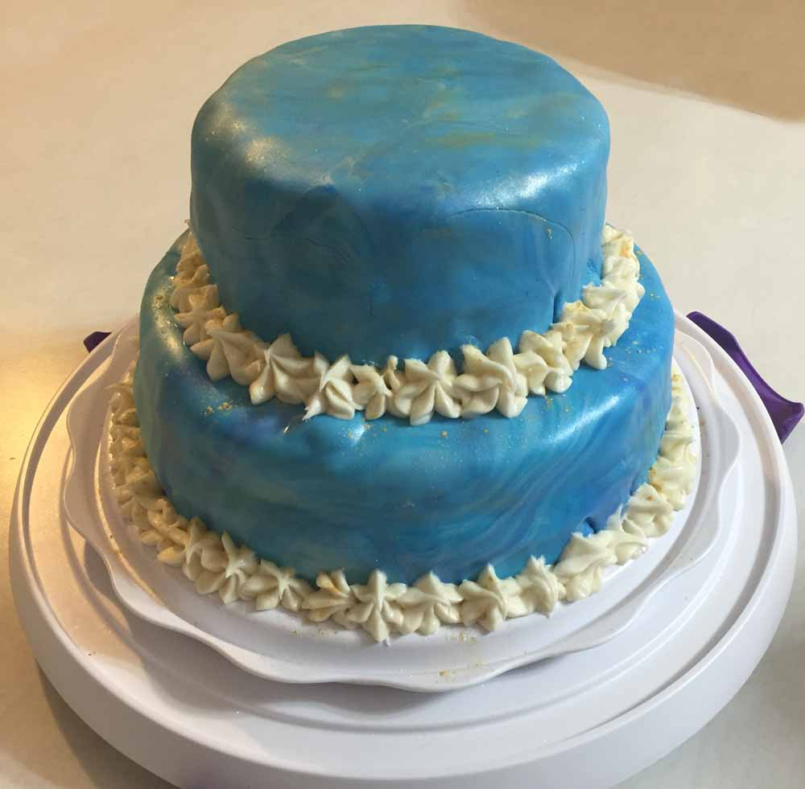
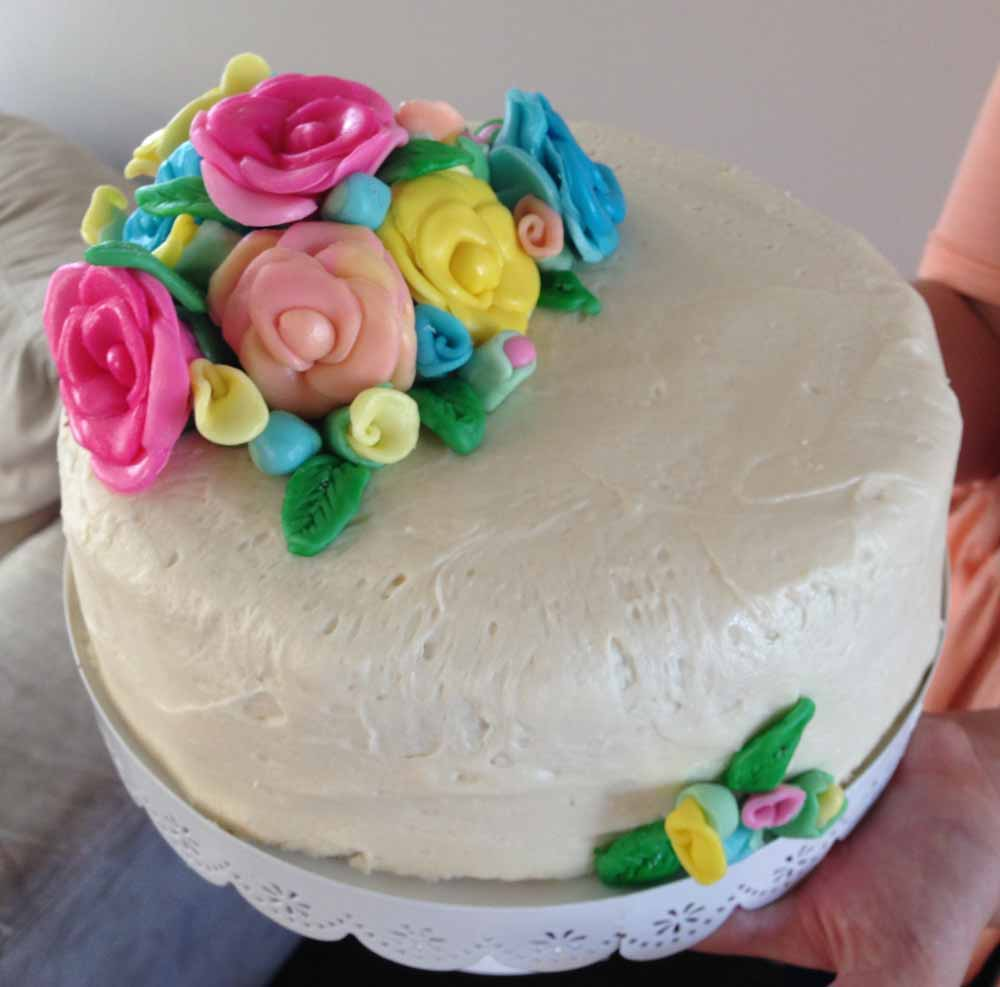
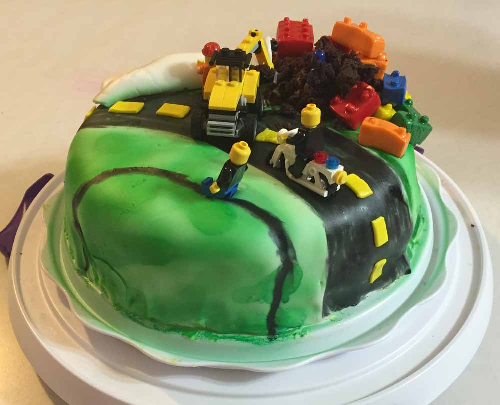
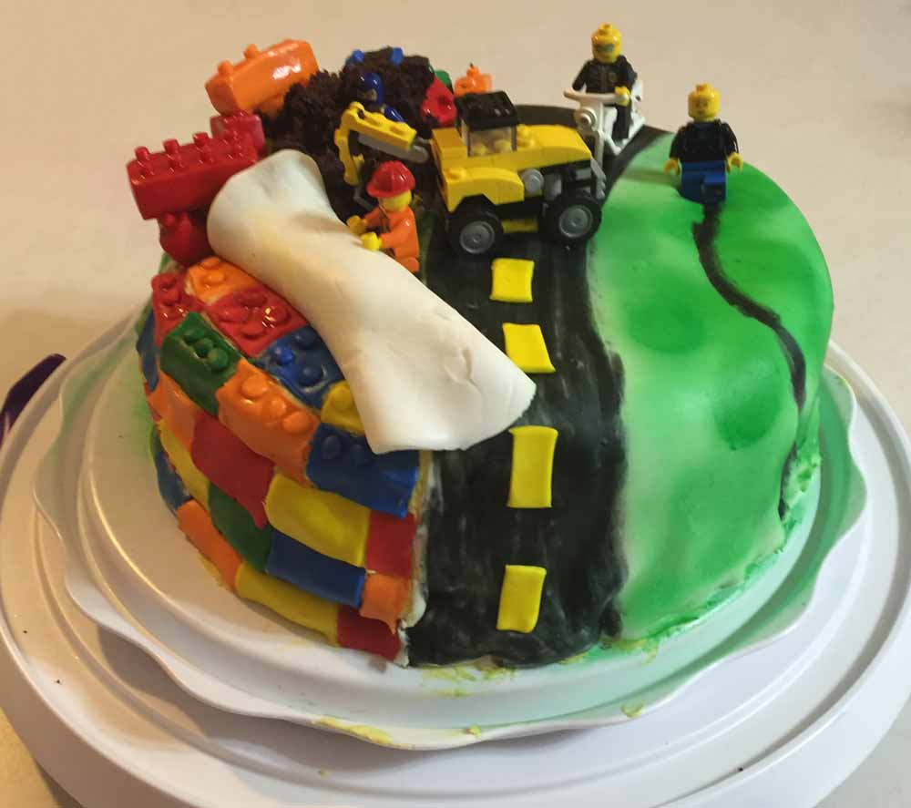
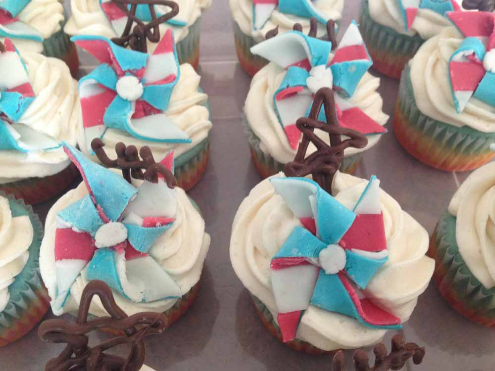
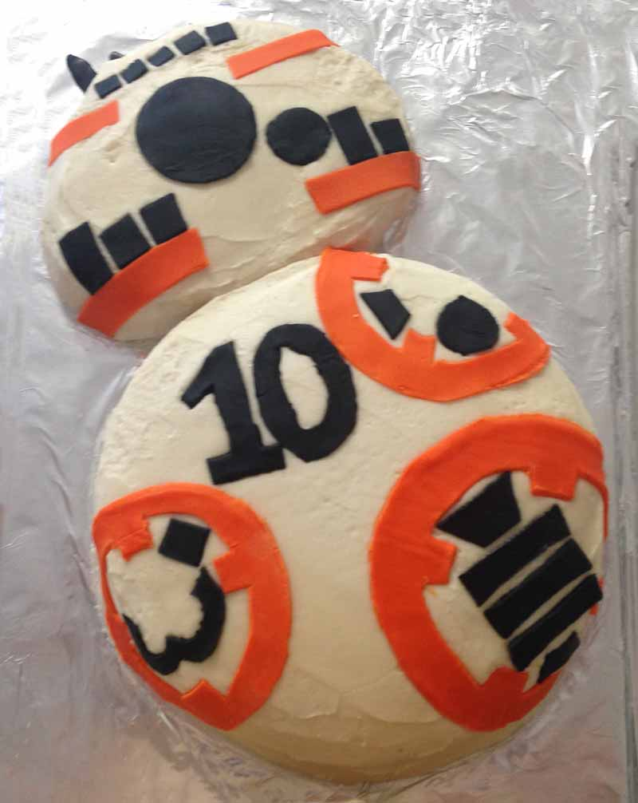

This is my little sisters birthday cake that I made for her 7th birthday.These cocoanuts are the kakamora that I put on the Moana cake.

I made these cute little gingerbread men for a Young Women and Young mens activityThis is the cake that I made for one of my teachers daughters birthday.I made the torch, because it is the young womens symbol, and all of the colored circles are the colors of the Young Women values.

The torch is the symbol of the Lds Young Women.

This was my birthcay cake. It was the first double layer cake.

I made this for my friends good bye party when she was moving. I had to make all of the flowers petals one by one.I made this for my friends good bye party when she was moving. I had to make all of the flowers petals one by one.This was the first cake that I covered in Fondant, so it is a little wrinkly, but it was a whole lot of fun. The letters are painted on, and I had to cut out a stencil.

I made this for my little sisters 5 birthday.

I made this for my little sisters 5 birthday.This is my fist shaped cake. It was really hard, because I didn't plan it out very well, but it was a lot of fun.

I made this for our family 4th of July celebration this year!

Star Wars BB-8 cake for my 10-year-old brother